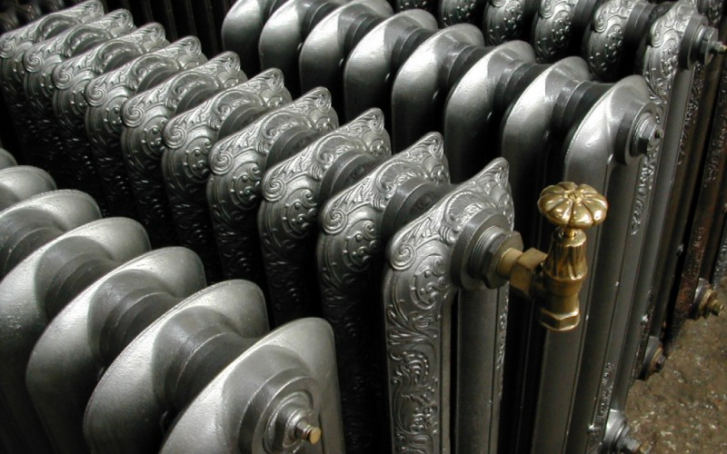

New look at radiators
When it comes to talking about radiators, immediately recall cast-iron radiators, Who "decorated" our homes for many years. However, the requirements for equipment that Invariably participates in our life, constantly grow, which means that it changes as their appearance, And the functional characteristics. An excellent example is modern radiators, Which can become a real decoration of any home. Those who have already seen such heating The instruments, of course, instantly realized that they did not go to any comparison with the Soviet Cast iron radiators, as they exceed them in all characteristics.
A modern solution for home heating
In a modern heating system, as a rule, there are three main elements: Generator of heat (as a rule, boilers, heat pumps or solar collectors), appliances Heating (radiators, warm floors, etc.) and pipelines. And the choice of each of these elements, One way or another, affects the efficiency of the heating system as a whole.
Radiators of heating today are installed by many owners of private houses. First, for Someone installation of "warm floors" - quite expensive. Secondly, the "warm floor" Perfectly cope with the tasks assigned to minus 15 C, but when the temperature drops Below its power will be missed and an additional power source will be needed. AND, Finally, the influence of the "warm floor" system on the human body has not yet been fully understood, Some designers do not recommend using the system in bedrooms, children's and other Places of active family time. Why? It is said that the system "raises" not Settling the dust, besides the room warms up not completely evenly: that is, the closer to Half, the temperature will be higher, and proportionally the reverse. Again, many Designers argue that the most competent combination is the combination of radiators Heating with "warm floors."
Radiator selection - nuances and subtleties
Choosing a radiator - on the one hand, not the most A complex task, on the other hand, is the diversity of manufacturers and Is large, and therefore it is necessary to understand the goals and expectations from our purchase.
Today, radiators can be found for every taste and color, and everything depends on the wishes The homeowner. The main practical indicator of the radiator is energy efficiency, otherwise Saying, how quickly he heats up and gives off heat. However, this indicator depends In many respects not only from the radiator itself, but also from the characteristics of the pipeline and the method Circulation of coolant in the pipes. And here the homeowner should think hard.
So, choosing pipes, we must first take into account their diameter. In pipes of smaller diameter Circulates a smaller amount of heat carrier, respectively, heat loss through the surface Pipes also decrease. In addition, the coolant in the small diameter pipes is heated and Circulates faster. Conclusion: the smaller the diameter of the pipes, the more efficient the operation of the entire system Heating and lower the cost of its maintenance. The material of the pipes is not so important from the standpoint Energy efficiency, however, a number of points need to be taken into account here. For example, notaries in lviv Rust and roads in the installation. Copper, do not rust, but are much more expensive.
What to look for?
There are a number of technical indicators that are important for long-term and efficient work Heating equipment, because today not all foreign (as well as domestic) devices Are adapted to different characteristics of the heating medium and the heating system.
Important technical indicators when choosing radiators:
- Performance characteristics that include working pressure (water pressure, which can To withstand this radiator) and heat transfer (how much heat radiates the radiator section). there is Subtle nuance: sometimes manufacturers, resorting to the marketing move, consciously overestimate Heat transfer of the device. For example, in the product documentation, you can read that The heat output of the device is 200 W, with DT - 70 C. But no one deciphers that this Means. In fact, this is the difference between the average air temperature in the room (Accepted 20 C) and the average temperature in the heating system. That is working The heat transfer of the radiator is indicated at the supply of 100, and the return - 80. But it is correct to assume Heat transfer at DT - 50 C. Then the pressure will be 120W, which corresponds to 1.2 m³ Area of the room.
- In order to properly select radiators, you must inform the seller of certain data and Characteristics of their home. For example, if the room is angular or some kind of wall It freezes, it must be taken into account when choosing a heating appliance, if you do not want to, So that you have a cool winter in the room. It is best to bring a house project with you, Where will be indicated the thickness of the walls, the number of double-glazed windows, the type of roofing and Other characteristics of external structures, on the basis of which manufacturers will help You need to choose the number of sections, as well as the type of radiator.
Design radiators - incredible aesthetic possibilities
Last time it is fashionable to complement the design of the house with modern design radiators. Designer Radiators in most cases are perceived as heating appliances that possess Unconventional appearance. Some designers who close the ordinary Heating apparatus decorative grid, by mistake believe that they have created a design radiator. You should know that this is far from being the case. A design-battery is a device, Which has an unusual shape and decorates the interior of the room.
Design radiators can frame a mirror, act as a partition and even "pretend" Bench. Unlike classic radiators, design radiators are built in The interior is still at the stage of its design, when the design layout of the room is just created. Bole Detailed various ideas that can be embodied in a simple heating appliance You can look at the photo.